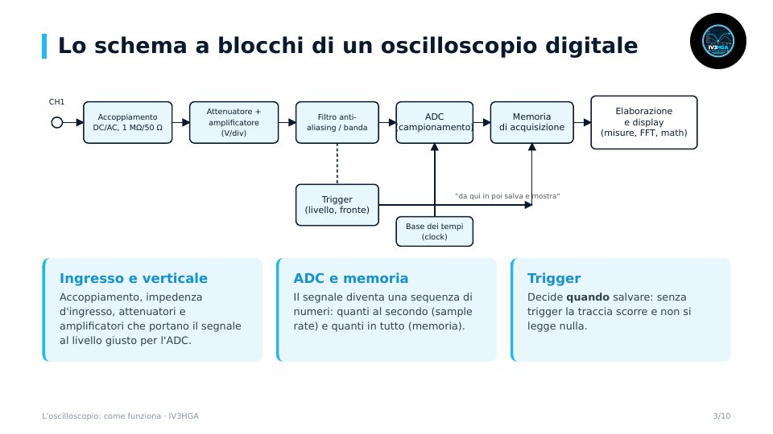

Capitolo 2 · Modulo 1
L'oscilloscopio: come funziona
- Analogico e digitale, lo schema a blocchi di un DSO
- Banda e tempo di salita: ts ≈ 0,35 / banda
- Campionamento, aliasing e il legame tra memoria e sample rate
- Il trigger e i modi di acquisizione (peak detect, average, persistenza)
- Le specifiche che contano